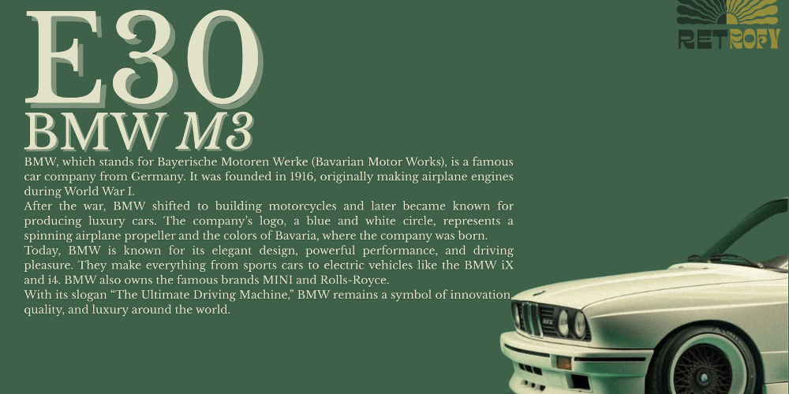

Retrofy
Tentang
Fitur
Kontak
Masuk
Ubah Foto Modernmu Jadi Retro Klasik
Dengan kekuatan AI, kami bangkitkan nuansa masa lalu ke dalam foto Anda.
Jelajahi Fitur

Fitur Unggulan
🎨 Transformasi Otomatis Foto Modern ke Gaya Retro
🧠 Teknologi AI Canggih untuk Pengeditan Estetis
📷 Dukungan Format Gambar Resolusi Tinggi
💾 Simpan & Unduh Foto Secara Instan
📁 Tidak Perlu Daftar untuk Penggunaan Dasar